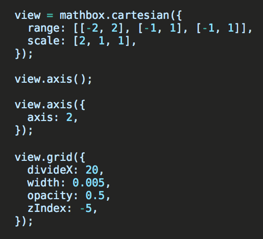
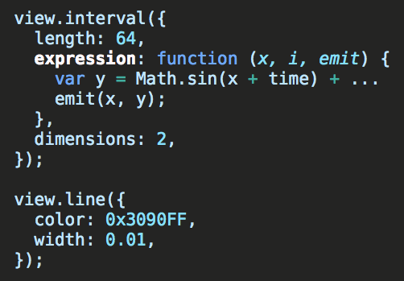
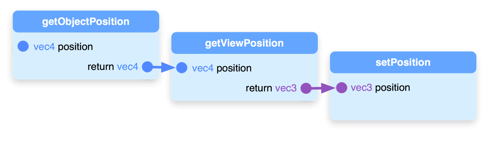
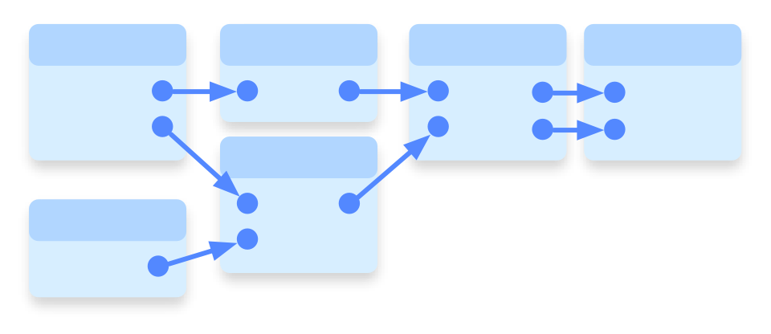
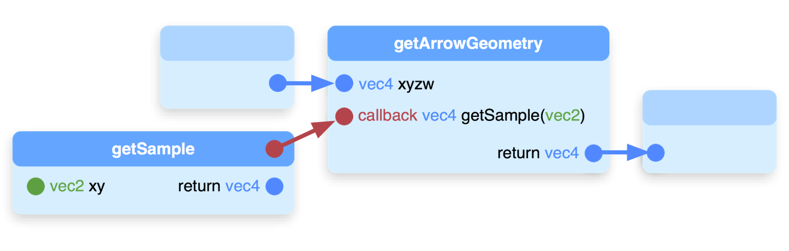
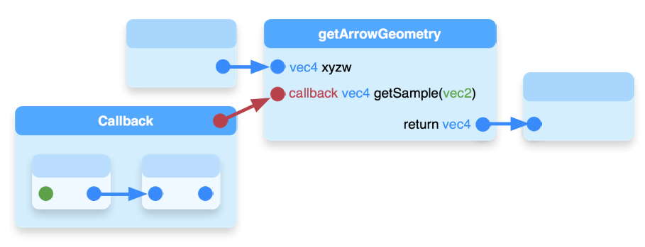

MathBox²
Work in Progress
Steven Wittens

 unconed
unconed
http:// acko.net
Undisplaced Mesh

→
Data Driven Geometry
SVG = 1 <path> + 32 × <circle>
MB² = 1 <interval length="32"> + 1 <line> + 1 <point>
(Note: MathBox is not XML based, is just a helpful notation)MathBox = O(1) Box
Native 4D – Hopf Fibration


<cartesian> … <interval expression="..." /> <line /> </cartesian>
expression: function (x, i, emit) { y = Math.sin(x + time) + … ; emit(x, y); }, // typedArray[p++] = x;
// typedArray[p++] = y;
<spherical> <area items="2" expression="..." /> <lerp items="32" /> <vector /> </spherical>
expression: function (x, y, i, j, emit) { ... emit(x, y, o); emit(x + a * r, y + b * r, o + c * r); },
<cartesian> <interval history="96" id="woosh" expression="..." /> <transpose order="xwzy" /> <vector /> <transpose order="ywzx" source="#woosh" /> <vector /> </cartesian>
Virtual Geometry Shading
64 → 981,522 floats 109,058 ▲
<cartesian> <grid /> </cartesian> <rtt> <cartesian> <grid /> </cartesian> </rtt> <compose /> <area expression="..." /> <compose />
<rtt> <compose /> <cartesian> <grid /> </cartesian> </rtt> <compose />
<rtt history="2"> <remap shader="..." /> <compose /> <cartesian> <grid /> </cartesian> </rtt> <compose />
Sampling Kernel
vec4 getSample(vec3 xyz); vec4 getFramesSample(vec3 xyz) { vec4 c = getSample(xyz + vec3( 0.0, 0.0, 1.0)); vec3 t = getSample(xyz + vec3( 0.0, 1.0, 0.0)).xyz; vec3 b = getSample(xyz + vec3( 0.0,-1.0, 0.0)).xyz; vec3 l = getSample(xyz + vec3(-1.0, 0.0, 0.0)).xyz; vec3 r = getSample(xyz + vec3( 1.0, 0.0, 0.0)).xyz; return vec4((t + b + l + r) / 2.0 - c.xyz, c.w); }
→
→
<rtt> … </rtt> <lerp /> <remap shader="..." /> <vector />
ShaderGraph
Functional GLSL Linker
Pipeline

Directed Acyclic Graph

Callbacks

Callback Graphs

…
vec3 _sn_1_truncateVec(vec4 v) { return v.xyz; }
vec4 _sn_6_getFramesSample(vec3 xyz) {
vec4 c = _sn_6_getSample(xyz + vec3( 0.0, 0.0, 1.0));
vec3 t = _sn_6_getSample(xyz + vec3( 0.0, 1.0, 0.0)).xyz;
vec3 b = _sn_6_getSample(xyz + vec3( 0.0,-1.0, 0.0)).xyz;
vec3 l = _sn_6_getSample(xyz + vec3(-1.0, 0.0, 0.0)).xyz;
vec3 r = _sn_6_getSample(xyz + vec3( 1.0, 0.0, 0.0)).xyz;
return vec4((t + b + l + r) / 2.0 - c.xyz, c.w);
}
vec4 _pg_2_(vec4 _io_1_v) {
vec3 _io_2_return;
vec4 _io_15_return;
_io_2_return = _sn_1_truncateVec(_io_1_v);
_io_15_return = _sn_6_getFramesSample(_io_2_return);
return _io_15_return;
}
MathBox²
- Reactive DOM
- Virtual Geometry Shaders
- Functional GLSL Linking